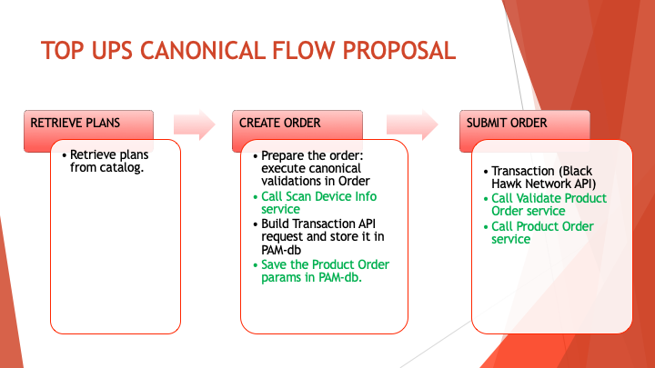

Demo
MAIN TOPICS
ENHANCEMENTS TO TOP-UPS PAM MODULE IMPLEMENTATION:
- Updates on the Top-Ups workflows for supporting Tracfone on RTR scenarios
- Common libraries (repositories) for the adapters and models
CONTEXT
- On the initial implementation of the "Top-Ups" module only the BlackHawk services were consumed
- We were notified of a special requirement: when dealing with Tracfone's RTR transactions, additional APIs must be invoked
- This didn't imply any update at the canonical level, only internal implementation changes
TOP-UPS CANONICAL FLOW:

WHAT WE DID
- We continued implementing the Top-Ups module using the repositories with Drone and Vela configurations:
WHAT WE DID
- Were improved the following canonicals workflows for supporting Tracfone carrier:
- The
Retrieve Plans API was not affected - Wiremock testing using Postman